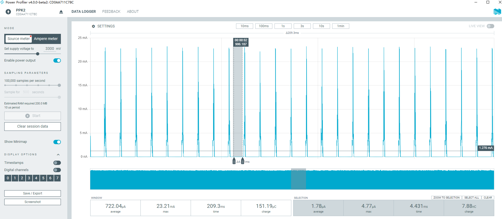
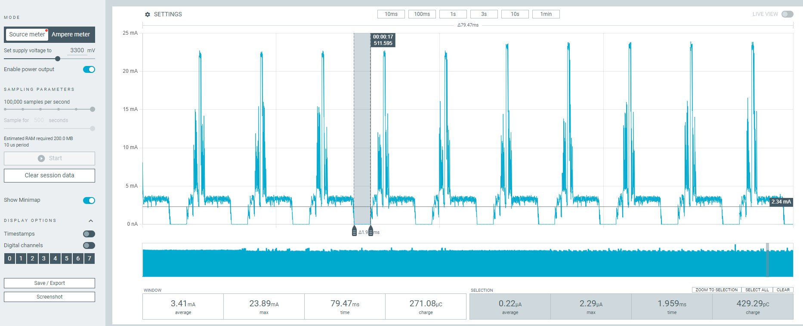
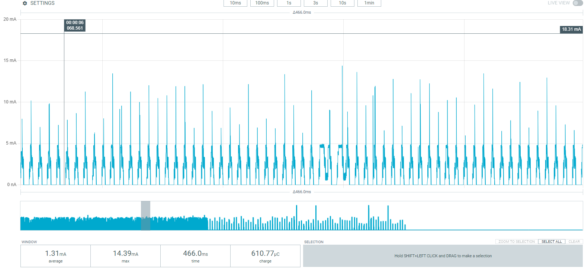
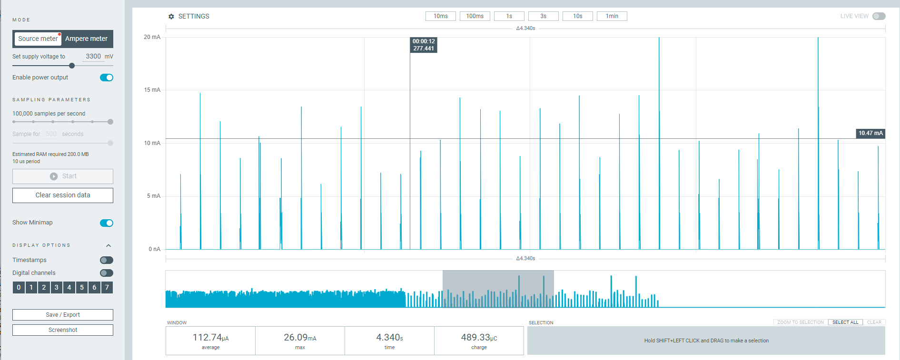

Multimode Mouse¶
重要
此例程仅存在于特殊版本的SDK中，如有需要请联系Panchip。
1 功能概述¶
此sample为pan107(32pin芯片) 实体鼠标上演示三模鼠标基础功能evb demo，为低功耗办公键鼠参考
三模切换不复位（
user_is_sleep_allow接口模式返回false较稳定，ble模式连接功耗高0.2mA），2.4G及蓝牙模式空闲deepsleep状态三模切换复位（默认开启切模式复位宏
CONFIG_CHANGE_MODE_RESET，进行chip reset load模式信息不进行rf phy reset）USB模式下最大上报率1000；配合
Panchip DFU tool可以进行USB DFU升级2.4G模式下 需要配合107/101 prf dongle使用，2.4G 默认使用最快时序 T->R 25us，配对过程中全速运行；默认配对后125HZ上报率，空闲时间由Idle 调度进入deepsleep休眠，由系统调度可以唤醒继续工作；dongle端支持多pipe，多主设备可共用dongle
蓝牙模式默认133HZ（7.5ms interval），空闲时间由Idle 调度进入deepsleep休眠，由系统调度可以唤醒继续工作 空数据持续
CONFIG_BLE_CG_LAT_TIME_S时间后进行latency 120ms调度，保持连接，休眠时间增长，继续经过CONFIG_BLE_STANDBYM1_TIME_S进入断连stanby
2 环境要求¶
board:
pan107（芯片型号）开发板 * 2 （MPC+版本，USB功能较稳定）uart0: 设置P16，P17作为默认的LOG输出端口，波特率921600
蓝牙主机设备如PC或者手机
prf_donglesolution 用于演示配合此程序配对跳频控制
3 编译和烧录¶
例程位置
<home>\nimble\pan10xx_mcu_boot（BOOT程序）<home>\nimble\samples\solutions_hid\mult_ms\keil_107x（APP程序）
使用keil进行打开项目进行编译烧录，需要烧录两个固件。
4 功能说明¶
为演示多种测试情况组合，通过 EVB 上按键KEY1（P06）切换KEY WKUP（P02）触发的功能
按KEY1后，功能循环遍历如下
enum app_test_func_t {
app_test_func_change_mode,//切换模式
app_test_func_auto_circle,//模拟画圈
app_test_func_ble_change_dev,//蓝牙模式切换设备
app_test_func_repair,//蓝牙或2.4G重新配对
app_test_func_erase_storage,//擦除所有保存flash的信息
};
4.1 操作流程说明¶
编译后全部擦除下载，上电默认在2.4G模式，自动画圈功能开启
上电烧录了
prf dongle的EVB，完成配对，配对在公共地址单频点进行，配对后，通过鼠标MAC地址生成私有通信地址，通过Dongle MAC地址生成私有通信频点，按一定规则进行跳频，挂测稳定，log每秒打印收发情况，可以通过切换到配对按键功能进行重复配对测试默认Key WKUP绑定不复位切换模式功能，按键依次遍历以下模式
enum app_work_mode_t { app_null_mode, app_charge_mode, app_usb_mode, app_prf_mode,//初始模式 app_ble_mode, app_emi_mode, };
需要注意蓝牙和2.4G模式默认空闲进入deepsleep，此时jlink烧录功能容易失败，可以运行keil tool jlink erase或者切换到其他模式下进行烧录
切换到蓝牙模式后，默认进行广播发送，可以进行配对，配对后进行自动画圈，可以通过按键功能停止自动画圈，自动画圈停止后，持续
CONFIG_BLE_CG_LAT_TIME_S时间后进行latency 120ms调度，保持连接，休眠时间增长，继续经过CONFIG_BLE_STANDBYM1_TIME_S进入断连stanby，唤醒后系统会reset，需要注意，目前reset后，广播异常发不出，进行chip reset后恢复，目前暂时这样使用蓝牙模式默认可以复位切换三个设备，通过绑定按键切换设备，触发可以进行循环处理三个设备连接画圈
需要进行蓝牙重新配对可以绑定按键重新配对功能后，触发进行重新配对，20s内未进行重新配对失败默认切回之前连接的设备，配对成功后会清除之前的配对信息，保留新的配对信息，已测试验证电脑和iphone循环重复配对
进入USB模式后，配合
量产烧录工具\Panchip DFU Tool，选择Pan10xx NDK芯片平台后，加载编译固件 app.signed.bin可以进行 boot内dfu升级
4.2 测试模式¶
模式
蓝牙：按键由底部往上看，左拨，配对时左一灯快闪，连接后熄灭，断连时慢闪
2.4G：按键由底部往上看，右拨，配对时中间灯快闪，连接后熄灭，断连时慢闪
EMI： 按住L+M上电，进入EMI测试，可以连接USB上位机工具进行EMI对测
Log：开启log时，调试log可由最下方灯IO输出
状态进入按键¶
按键 |
检测时间 |
2.4G模式 |
USB模式 |
蓝牙模式 |
|---|---|---|---|---|
DPI |
0 |
切换传感器灵敏度 |
切换传感器灵敏度 |
切换传感器灵敏度 |
L + M + R |
3 |
擦除配对 + Reboot |
无 |
不重启重新配对 |
M + R |
3 |
自动画圈 |
自动画圈 |
自动画圈 |
M |
3 |
切换上报率 |
切换上报率 |
无 |
L + M |
3 |
无 |
无 |
切换蓝牙多设备 |
5 性能说明¶
5.1 功耗说明¶
关闭log，降低频率降低功率可以在使用场景下进行优化功耗
2.4G
2.4G配对后，test_mode_auto_circle开启情况下，关闭log，可以PPK测试当前上报率下满载数据通信条件下的功耗，可以变化不同的功率配置进行测试
可以观察到，空闲时间进入功耗低的deepsleep模式6~7ms，对功耗降低有一定帮助
目前测试2.4G功耗
700uA+ —– 9dbm
500uA+ ——0dbm

BLE
BLE配对后，test_mode_auto_circle开启情况下，关闭log，可以PPK测试当前上报率下满载数据通信条件下的功耗，可以变化不同的功率配置进行测试
可以观察到，空闲时间进入功耗低的deepsleep模式2ms+，对功耗降低有一定帮助，但需要注意，蓝牙写入数据的函数为flash function，执行速度与代码当前cache有一定关系，以下代码执行1.3ms~2.5ms级别对应芯片的普通运行状态电流，剩余时间由controller判断是否执行休眠，因此蓝牙功耗测试可能不同次复位的情况下，功耗略不同
om = ble_hs_mbuf_from_flat(&app_data, sizeof(app_data));
ble_gatts_notify_custom(peri_conn_handle, hid_app_input_handle, om);
目前测试BLE功耗
3mA+ —– 9dbm
2mA+ ——0dbm

蓝牙除了全速运行状态，还有仅连接不上报数据状态，latency（120ms）连接状态，0db测试过功耗如下
1mA+ ——- 仅连接 0dbm

100uA+ —– latency 120ms

standby电流： uA级别
6 开发说明¶
6.2 软件说明¶
main
main函数启动前，执行了系统初始的配置（主频分频串口校准信息load等），建立main线程，main即为可退出的线程入口
main线程，初始化了模式后，建立消息队列调度，方便管理main的suspend和运行调度状态
需要统一处理main发包建议使用xQueue调度
int main(void)
{
#if CONFIG_BOOT_ENABLE
print_version_info();
#endif
app_reset_check();
app_sem_init();
kv_init();
app_common_init();
app_work_mode_init();
g_msg_q = xQueueCreate(10, sizeof(uint8_t));
uint8_t option_read;
while (1) {
xQueueReceive(g_msg_q, (void *)&option_read, portMAX_DELAY);
switch (option_read) {
case msg_change_mode:
app_work_mode_deinit();
app_work_mode_init();
break;
case msg_change_dev:
printf("app_test_func_ble_change_dev\n");
app_ble_change_id();
break;
case msg_repair:
printf("app_test_func_repair\n");
if (app_work_mode == app_ble_mode) {
app_ble_repair();
} else if (app_work_mode == app_prf_mode) {
app_prf_repair();
}
break;
case msg_prf_report:
break;
case msg_ble_report:
break;
}
}
}
idle线程/user_is_sleep_allow接口控制空闲休眠状态
用户可以使用ilde线程控制vApplicationIdleHook也可以使用 API user_is_sleep_allow接口控制休眠状态为deepsleep或者wfi sleep
默认使用API 接口控制并且关闭了idle线程
deepsleep前后拉了IO可以debug睡眠时间状态
CONFIG_RAM_CODE void vSocDeepSleepEnterHook(void)
{
APP_DBG_IO(2, 1, 1)
}
CONFIG_RAM_CODE void vSocDeepSleepExitHook(void)
{
APP_DBG_IO(2, 1, 0)
}
2.4G
2.4G需要BLE单次初始化LL，并单次建立发包线程
void app_prf_thread_init(void)
{
static bool prf_thread_inited = false;
if (prf_thread_inited) {
return;
}
prf_thread_inited = true;
/* Create an PRF Task */
int r = xTaskCreate(task_prf_entry, // Task Function
"task_prf", // Task Name
300, // Task Stack Size
NULL, // Task Parameter
7, // Task Priority
&task_prf_hd // Task Handle
);
/* Check if task has been successfully created */
if (r != pdPASS) {
printf("Error, PRF Task created failed!\n");
while (1);
}
}
根据使用场景主要用到了sleep timer irq trigger组包，rf中断处理重传或者动态配置可以进入deepsleep，发包状态下始终控制不休眠状态稳定
BLE
2.4G需要BLE单次初始化LL，并单次建立 OS Host线程，发包线程
host线程（创建在API内部，LL init之后）
pan_ble_stack_init(app_ble_pre_init_cb, app_ble_enabled_cb);
发包线程建立并注册app_conn_evt_close_cb(trigger组包使用)
static void app_ble_thread_init_once(void)
{
static bool app_ble_thread_inited = false;
if (app_ble_thread_inited) {
return;
}
app_ble_thread_inited = true;
/* Create an App Task */
int r = xTaskCreate(ble_report_thread_entry, // Task Function
"hid_report", // Task Name
300, // Task Stack Size
NULL, // Task Parameter
7, // Task Priority
&task_report_hd // Task Handle
);
/* Check if task has been successfully created */
if (r != pdPASS) {
printf("Error, App Task created failed!\n");
while (1);
}
#if !BLE_TIMER_TRIGGER_PKT
pan_misc_register_conn_evt_close_cb((pan_conn_evt_close_cb_t)app_conn_evt_close_cb);
#endif
}
广播接口，重新配对等处理参考代码调度，不复位切换需要注意处理好蓝牙状态，线程调度状态
动态改latency接口
app_ble_change_latency(6, 6, 15, 200);
模式切换
进入蓝牙需要切换CHIP MODE为蓝牙
void app_ble_ensure_chip_mode(void)
{
CLK->IPRST0 |= BIT3 | BIT8;
CLK->IPRST0 &= ~(BIT3 | BIT8);
RF_PhyResetEx();
printf("bleprph_on_sync chip mode1 %d\n", PRI_RF_GetChipMode(PRI_RF));
PRI_RF_ChipModeSel(PRI_RF, PRI_RF_CHIP_MODE_BLE);
printf("bleprph_on_sync chip mode1 %d\n", PRI_RF_GetChipMode(PRI_RF));
}
进入蓝牙需要reset并在prf_init中切换了CHIP MODE为2.4G
void app_prf_mode_init(void)
{
app_ble_phy_host_init_once();
CLK->IPRST0 |= BIT3 | BIT8;
CLK->IPRST0 &= ~(BIT3 | BIT8);
RF_PhyResetEx();
PRI_RF_ChipModeSel(PRI_RF, PRI_RF_CHIP_MODE_297);
panchip_prf_init(&tx_config);
...
}
app common
app common运行了基础外设的使用及封装信号量，xQueue操作等调度机制
sleep timer使用需要在rcl开启，PM开启情况下使用
charge mode
充电模式开启了软件定时器，EVB上跳线帽P12与ADC后，控制旋钮可以采集不同电压打印
8 已知问题¶
实体鼠标中，已知问题（待进一步优化软件硬件）
某些硬件测试到过蓝牙切usb导致跳线
某些2628硬件配对交互35B性能不一致
蓝牙模式已修改为空闲latency 350ms 调度，但有小概率发生折线，待进一步优化
传感器精确度需要进一步确认
功耗仍有优化空间，通过延长deepsleep方式为主要优化点，硬件待进一步统一后确认